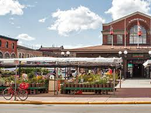
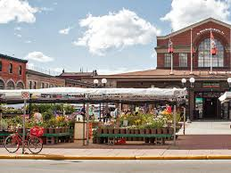

ByWard Market

O ByWard Market é um dos bairros mais antigos e vibrantes de Ottawa. Criado em 1826, é famoso por seus mercados ao ar livre, restaurantes, cafés e vida noturna. Durante o dia, oferece barracas de frutas, flores, artesanato e produtos locais; à noite, torna-se um ponto de encontro cultural e gastronômico.
⏰ Horário de Funcionamento: Todos os dias, das 9h às 18h (alguns restaurantes e bares funcionam até mais tarde).
💲 Ingressos: Acesso gratuito (custos apenas para restaurantes, bares e compras).
📍 Endereço: ByWard Market, Ottawa, ON, Canadá.
⭐ Importância: Considerado o coração cultural de Ottawa, mistura tradição e modernidade, sendo um dos maiores mercados públicos do Canadá.

 
